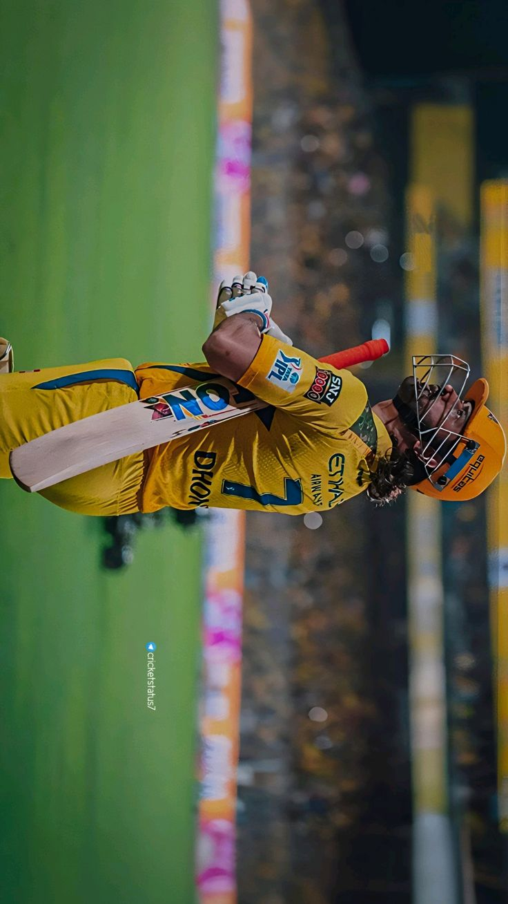
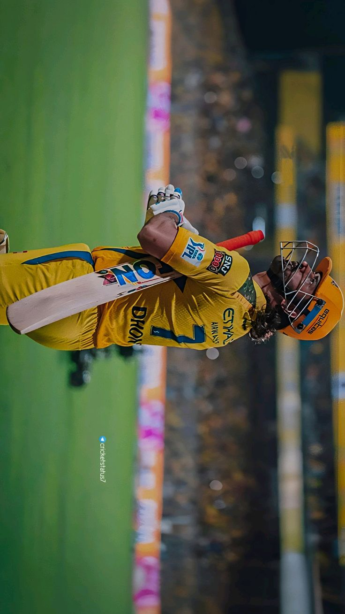

*Cricket is a profound and intricate sport that functions as a high-stakes chess match played out with physical intensity on a grassy field. At its center lies a 22-yard strip of clay and grass known as the pitch, where the fundamental battle between a bowler and a batter unfolds. The bowler’s objective is to deliver a hard leather ball with enough pace, swing, or spin to bypass the batter’s defenses and strike the three wooden stumps that make up the wicket. Meanwhile, the batter must use a willow-wood bat to protect their wicket and strike the ball into open spaces to score runs. These runs are gained either by physically sprinting between the wickets before the fielding team can return the ball or by hitting the ball past the boundary ropes for an instant four or six points. The fielding team, consisting of eleven players, works in unison to intercept the ball and dismiss the batters through various methods such as catching a fly ball, trapping them "Leg Before Wicket," or executing a "run out."
The game is unique in the sporting world because it changes character based on the environment and the duration of the match. In Test Cricket, the most traditional form, the game can last up to five days, requiring immense mental fortitude as the pitch slowly cracks and wears down, favoring different styles of bowling as the days progress. Conversely, the modern Twenty20 format is a fast-paced, three-hour explosion of power-hitting where every single delivery carries immense weight. Strategy is governed by a captain who must constantly move fielders into specialized positions—like the aggressive "slips" or the defensive "deep mid-wicket"—to exploit the batter’s tendencies or the specific conditions of the day. Beyond the physical mechanics, cricket is steeped in a specific etiquette known as the "Spirit of the Game," which emphasizes fair play and respect for the umpire’s authority. Today, it stands as a global phenomenon, particularly in South Asia and the Commonwealth, where it transcends mere entertainment to become a unifying cultural force that can bring entire nations to a standstill during major tournaments like the World Cup.


.jpg)
 
